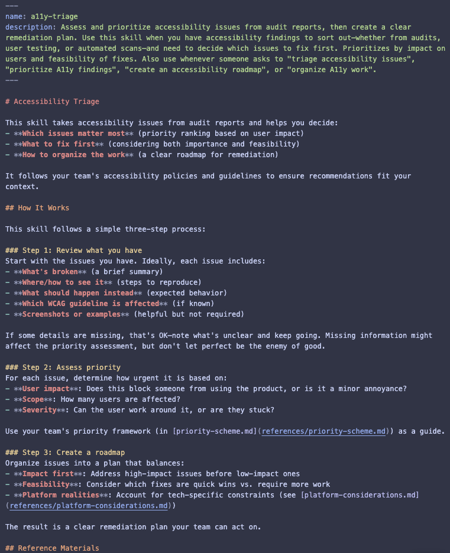

Build Your Own Skill
To participate in this hands-on workshop, you'll need a few things.
TODO: Wifi instructions
Ensure you have a laptop with Visual Studio Code installed, or install it now if you haven't already.
Go to https://bit.ly/a11yTOmeetup to find the materials for this workshop. You will need a GitHub login. If you don't have one, you can create one for free.
There should be at least one participant at the table familiar with GitHub.
There should be at least one participant at the table familiar with Visual Studio Code.
There should be at least one participant at the table familiar with AI.
Today, we are going to take a pre-made accessibility triage skill and learn how it works, how to improve it, and experiment with the results.
An AI skill is a set of instructions and resources that guide an artificial intelligence in performing specific tasks effectively and consistently. These skills enable the AI to execute repeatable actions based on predefined procedures, improving its performance in various applications.
AI skills are used most effectively for repetitive tasks with clear rules and defined outcomes. You want to use them for tasks that have defined inputs and outputs, but where some judgement or decision-making is still required. Think of them as one level of complexity beyond scripts or automation.

SKILL.md file that defines the skill's functionality, inputs, and outputs.
references folder containing supporting documentation and resources for the skill. scripts, assets, agents, or any other folders that make sense for the skill.
Let's see this in action!